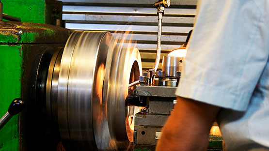

ЦВК«Экспоцентр» приглашает Вас принять участие в 18-й международной специализированной
выставке «Оборудование, приборы и инструменты для металлообрабатывающей
промышленности» - «Металлообработка-2017».
Международная выставка крупнейшим проектом в России и СНГ в области станкостроения, предлагая передовые
решения для модернизации российского машиностроительного комплекса.
«Металлообработка», как ключевая в России выставка машиностроения, отражает все мировые тенденции
развития
отрасли и по своим масштабам и коммерческой результативности входит в десятку ведущих международных
промышленных форумов.
- Площадь выставки 83317 кв.м брутто, 38519 кв.м нетто;
- Кол-во экспонентов 981 из 32 стран, из них 450 российских;
- Кол-во посетителей - 28300, посещений - около 60000;
- 8 национальных/коллективных экспозиций из Беларуси, Германии, Италии, Китая, Франции, Чехии, Швейцарии и
Тайваня
(при поддержке национальных профильных ассоциаций из этих стран).
Тематика выставки:
- Комплексные технологии на базе высокопроизводительного оборудования, инструмента и оснастки для
технического
перевооружения предприятий
- Комплектующие узлы и изделия, технологическая оснастка, программное обеспечение, эксплуатационные
материалы
- Ремонт и модернизация технологического оборудования, запасные части, услуги
- Развитие современных информационных CALS-технологий в реальном секторе экономики
- Современные материалы для металлообработки
{kind=link}
{kind=link}
{kind=link}